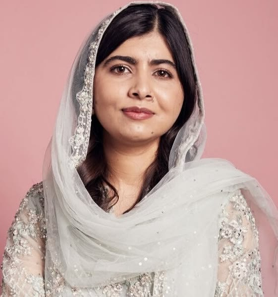
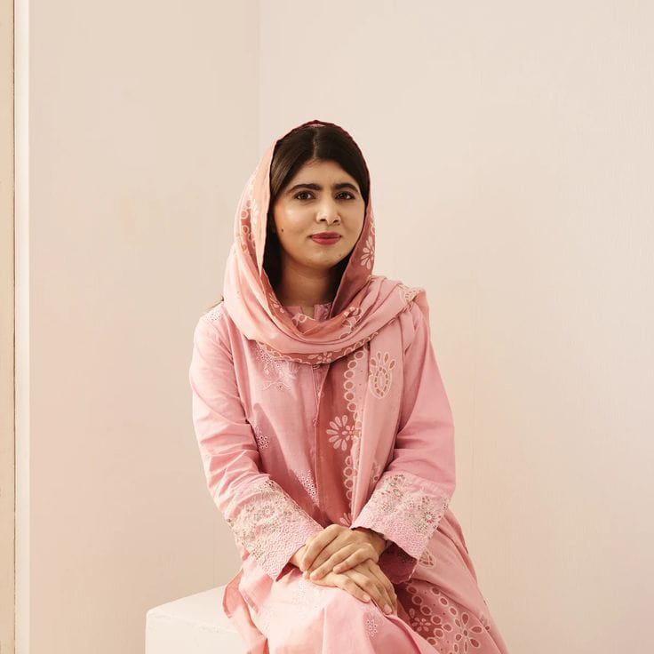
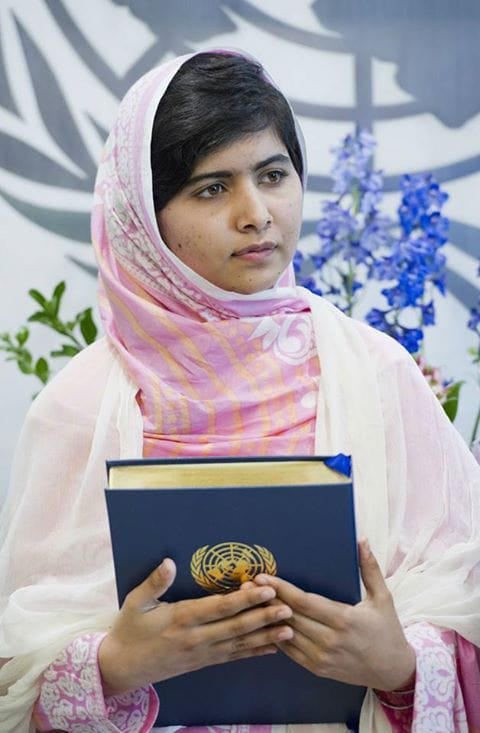

01 · IntroducciónResumen
Malala Yousafzai es una activista pakistaní nacida en 1997 en el valle de Swat, Pakistán. Se hizo conocida a los once años cuando escribió un blog para la BBC bajo el seudónimo de Gul Makai, denunciando los ataques de los talibanes contra las escuelas de niñas.
El 9 de octubre de 2012 fue atacada por un talibán que le disparó en la cabeza. Sobrevivió y se convirtió en un símbolo global de la lucha por el derecho a la educación.
Su idea central es que la educación es un derecho universal y la única solución a los grandes problemas de la humanidad: la pobreza, la ignorancia, el terrorismo y la desigualdad. En 2014 recibió el Premio Nobel de la Paz, convirtiéndose en la persona más joven en obtenerlo.
La educación es la única solución. La educación es lo primero.
02 · Su vozDiscurso
Hay nombres que se convierten en símbolos de una era, y el de Malala Yousafzai resuena como un eco imparable en la lucha por los derechos humanos. Nacida en 1997 en el valle de Swat, Pakistán, su infancia transcurrió entre el amor por los libros y la sombra del régimen talibán, un grupo extremista que prohibió el acceso de las niñas a las aulas.
A los 11 años, escondida tras el seudónimo de Gul Makai, Malala comenzó a relatar para la BBC lo que significaba vivir bajo la prohibición de aprender. Su voz, pequeña en apariencia pero inmensa en valentía, molestó a quienes le temían al conocimiento. El 9 de octubre de 2012, un terrorista subió al autobús escolar y le disparó. Intentaron callarla; lo que lograron fue multiplicar su mensaje por todo el planeta.
De víctima a fuerza global
Malala sobrevivió, y su recuperación marcó el inicio de una de las cruzadas sociales más trascendentales de nuestro siglo.
Los extremistas pensaron que cambiarían mis objetivos y frenarían mis ambiciones, pero la fuerza, el poder y el valor nacieron.
A partir de ese momento, su labor transformó no solo la opinión pública, sino las leyes internacionales:
- Inspiración legislativa: Su llamado internacional motivó a Pakistán a ratificar la Ley sobre el Derecho a la Educación Gratuita y Obligatoria.
- El Fondo Malala (Malala Fund): Junto a su padre, creó una organización global que invierte en programas educativos y empodera a activistas locales en regiones donde la educación femenina está en riesgo, como Siria, Afganistán, Brasil y Nigeria.
- Premio Nobel de la Paz: En 2014, a los 17 años, se convirtió en la persona más joven de la historia en recibir el galardón, reconociendo su lucha implacable por la infancia.
Un legado que sigue transformando el mundo
Graduada de la Universidad de Oxford en Filosofía, Política y Economía, hoy Malala no solo es una figura icónica, sino una estratega del cambio social. Como Embajadora de la Paz de la ONU, sigue desafiando a líderes mundiales para garantizar que cada niña tenga acceso a 12 años de educación gratuita, segura y de calidad.
Malala Yousafzai nos demostró que las armas no pueden competir contra las ideas y que un lápiz, sostenido con determinación, tiene el poder de cambiar la historia.
03 · Momentos claveLínea de tiempo
Nace en Mingora, valle de Swat, Pakistán.
Comienza a escribir el blog de la BBC bajo el seudónimo Gul Makai.
Sobrevive al atentado talibán del 9 de octubre en el autobús escolar.
Pronuncia su histórico discurso ante la ONU el 12 de julio, día de su cumpleaños 16.
Recibe el Premio Nobel de la Paz, siendo la persona más joven en obtenerlo.
Se gradúa en Filosofía, Política y Economía por la Universidad de Oxford.
04 · GaleríaImágenes



05 · ReferenciasFuentes de información
- Discurso completo en inglés (Youth Takeover, ONU, 12 de julio de 2013), material didáctico de Speak Truth To Power:
gulbenkian.pt/.../Malala_Yousafzai_EN-1.pdf - La Prensa (Honduras): "Malala: Pensaron que con sus balas me callarían para siempre, pero fracasaron".
laprensa.hn/mundo/malala-... - Discurso ante la ONU (2013): primera intervención pública tras el atentado. Frase clave: "Un niño, un maestro, un libro y un lápiz pueden cambiar el mundo."
- Discurso del Premio Sájarov (2013): intervención ante el Parlamento Europeo donde pidió apoyo para la educación universal.
- Discurso del Premio Nobel de la Paz (2014): aceptación del galardón, dedicado a los niños sin voz que quieren educación y paz.
- Fondo Malala: organización fundada por ella para defender el derecho a la educación de las niñas.
malala.org - Nobel Prize: biografía oficial y discurso de aceptación.
nobelprize.org/.../yousafzai